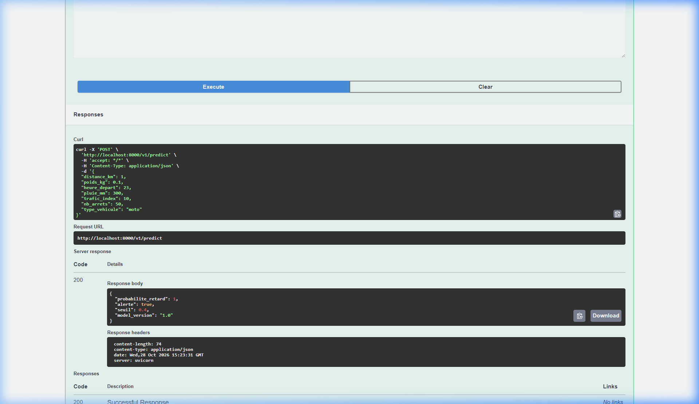
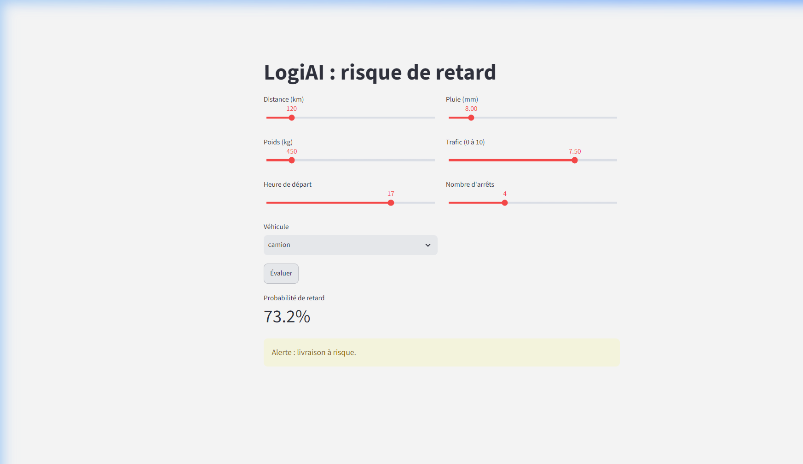

Nom et Prénom : BOUJRADA Younes
Module : Développement et déploiement d’applications intelligentes
Année Universitaire : 2026 - 2027
Branche Git : tp-api
Sortie de python -m pytest au démarrage (état initial) :
collected 13 items
tests\test_api.py ..FFFF......F [100%]
=========================================== FAILURES ===========================================
FAILED tests/test_api.py::test_predict_valide_renvoie_200 - assert 422 == 200
FAILED tests/test_api.py::test_predict_forme_de_la_reponse - AssertionError: assert {'detail'} == {'alerte', ...}
FAILED tests/test_api.py::test_predict_probabilite_entre_0_et_1 - KeyError: 'probabilite_retard'
FAILED tests/test_api.py::test_predict_trajet_risque_plus_eleve_que_trajet_facile - KeyError: 'probabilite_retard'
FAILED tests/test_api.py::test_modele_absent_renvoie_503 - assert 422 == 503
=================================== 5 failed, 8 passed, 1 warning ===================================
Performances initiales du modèle (python -m logiai.train) :
Pourquoi certains tests attendant un code 422 passaient-ils déjà alors que rien n'était encore codé ?
Le schéma Livraison était configuré avec model_config = ConfigDict(extra="forbid") et n'avait aucun champ déclaré (seul distance_km était présent). Dès lors, tout champ transmis dans la requête HTTP était considéré comme inconnu et interdit, provoquant systématiquement un rejet automatique par Pydantic avec une erreur 422 Unprocessable Entity. Les tests attendant 422 réussissaient donc par « faux vert » car tout était rejeté, y compris les données légitimes.
Définition des 6 variables restantes avec leurs bornes physiques réalistes :
| Variable | Min | Max | Justification physique |
|---|---|---|---|
distance_km |
1 | 1000 | D'un court trajet urbain (1 km) jusqu'à une liaison nationale longue distance (1000 km). |
poids_kg |
0.1 | 30000 | Du pli/colis léger en moto (100 g) jusqu'à la capacité d'un camion lourd (30 tonnes). |
heure_depart |
0 | 23 | Heure sur le cycle journalier de 24 heures (0 à 23). |
pluie_mm |
0 | 300 | Temps sec (0 mm) jusqu'à des conditions orageuses ou d'inondation extrêmes (300 mm). |
trafic_index |
0 | 10 | Échelle standardisée fixée dans le contrat (0 = parfaitement fluide, 10 = réseau saturé). |
nb_arrets |
0 | 50 | Trajet direct sans arrêt (0) jusqu'à une tournée urbaine intensive de livraison (50 arrêts). |
@app.post("/v1/predict", response_model=PredictionOut)
def predict(livraison: Livraison):
predictor = state.get("predictor")
if predictor is None:
raise HTTPException(
status_code=503,
detail="Modèle non chargé. Veuillez vérifier la présence du modèle ou ré-entraîner avec python -m logiai.train"
)
resultat = predictor.predict(livraison.model_dump())
return PredictionOut(**resultat)
| Requête | Code HTTP | Explication |
|---|---|---|
| Livraison normale | 200 OK | Données valides respectant l'ensemble du schéma et modèle présent en mémoire. |
distance_km = -5 |
422 Unprocessable Entity | Valeur négative refusée par la borne ge=1 vérifiée par Pydantic. |
type_vehicule = "avion" |
422 Unprocessable Entity | Valeur non conforme à l'énumération Literal["moto", "fourgon", "camion"]. |
Modèle absent (dossier models/ supprimé) |
503 Service Unavailable | state.get("predictor") est None ; l'API lève explicitement une HTTPException(503). |

joblib) prennent des dizaines à centaines de millisecondes et sollicitent fortement le CPU/disque. Le charger une seule fois au démarrage (cycle lifespan) et le garder en mémoire RAM permet d'exécuter chaque prédiction en quasi-instantané (< 2 ms).logiai/api/schemas.py via le paramètre le=... de Field(). FastAPI et Pydantic interceptent et exécutent automatiquement cette validation avant tout traitement applicatif./v1/predict plutôt que /predict ?/v2 sans impacter ni casser les clients existants qui continuent de consommer la version 1.int ?14.8 km) provoquerait une erreur de validation 422 ou une troncature forcée, privant l'API d'une précision kilométrique réelle.Répondre 503 ou refuser de démarrer ? Qu'est-ce que chaque option fait perdre ?
/health indique {"status": "ok", "model_loaded": false}. Les dashboards de supervision peuvent identifier immédiatement la cause sans que le serveur ne tombe en panne complète. La documentation /docs reste également consultable. Ce qu'on perd : Les requêtes d'inférence échouent pour les utilisateurs./health ou /docs, provoquant des boucles de redémarrage (CrashLoopBackOff).Résultat après implémentation du schéma, de la route et des deux tests personnalisés :
============================= test session starts ============================= platform win32 -- Python 3.11.9, pytest-9.2.0, pluggy-1.7.0 rootdir: C:\Users\PC\Downloads\logiai_starter\starter plugins: anyio-4.15.1 collected 15 items tests\test_api.py ............... [100%] ======================== 15 passed, 1 warning in 2.99s ========================
Les deux tests ajoutés dans tests/test_api.py :
def test_heure_24_refusee():
with TestClient(app) as client:
assert post(client, heure_depart=24).status_code == 422
def test_alerte_coherente_avec_le_seuil():
difficile = dict(distance_km=479, poids_kg=2040, heure_depart=17,
pluie_mm=46, trafic_index=10, nb_arrets=4, type_vehicule="camion")
facile = dict(distance_km=5, poids_kg=3, heure_depart=11,
pluie_mm=0, trafic_index=1, nb_arrets=0, type_vehicule="moto")
with TestClient(app) as client:
res_difficile = post(client, **difficile).json()
res_facile = post(client, **facile).json()
assert res_difficile["alerte"] is True
assert res_facile["alerte"] is False

Gestion de l'API indisponible : Lorsque le serveur uvicorn est arrêté, le bloc try / except requests.ConnectionError intercepte l'erreur et affiche proprement dans l'interface : « API injoignable : lancez uvicorn dans un autre terminal. »
Question d'architecture : Ce client Streamlit n'importe plus scikit-learn ni le modèle. Cela découple totalement le frontend du backend d'IA. Une application mobile (iOS/Android) ou web en React n'a besoin que d'effectuer une requête HTTP POST standard, sans nécessiter d'environnement Python ni télécharger un modèle lourd.
schemas.py.